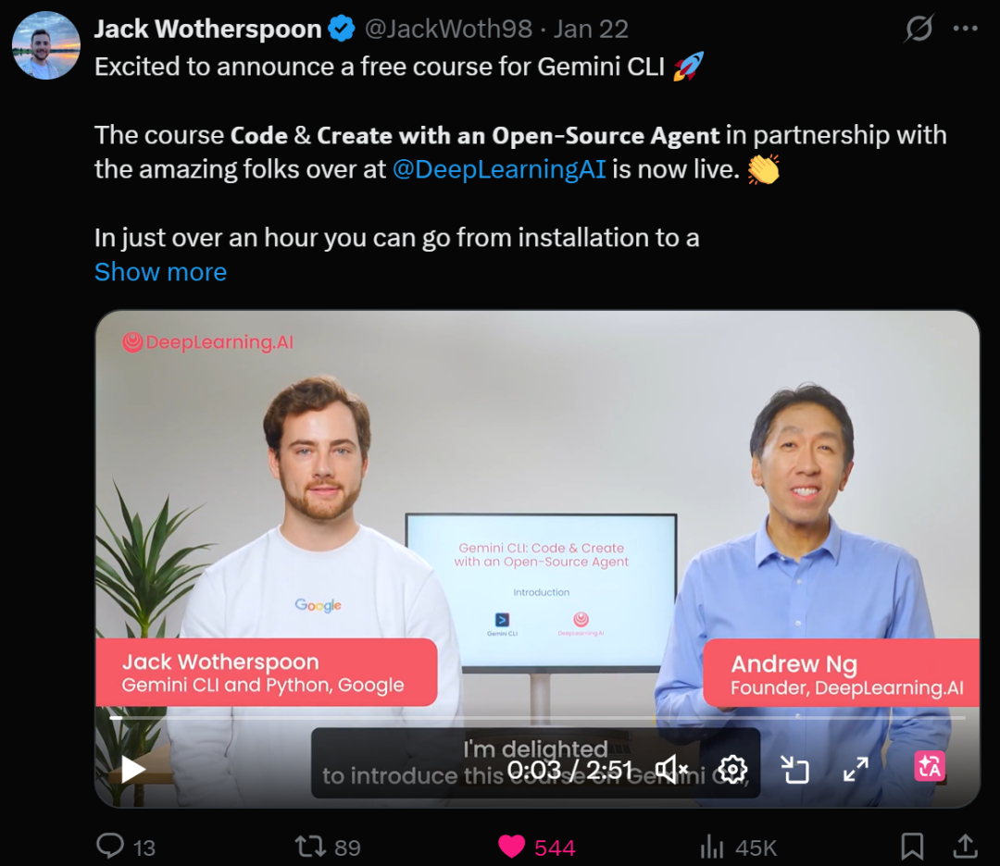
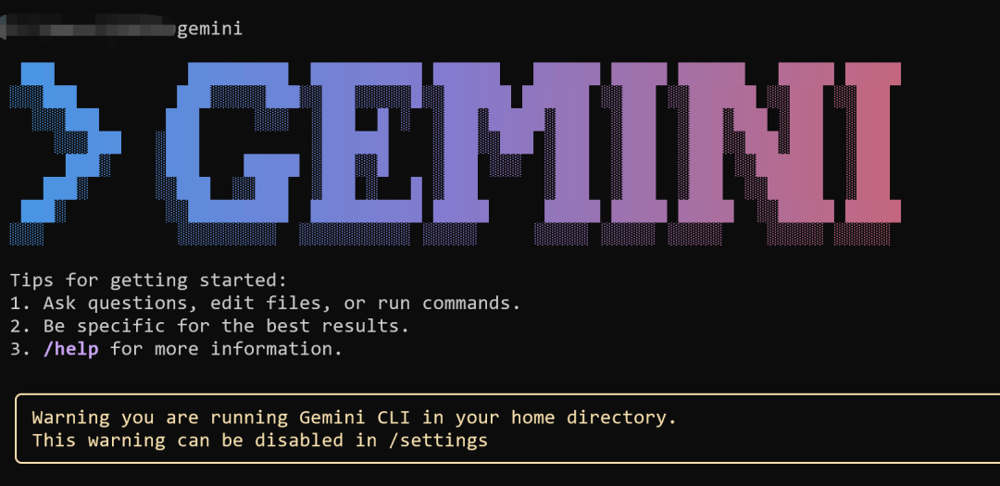
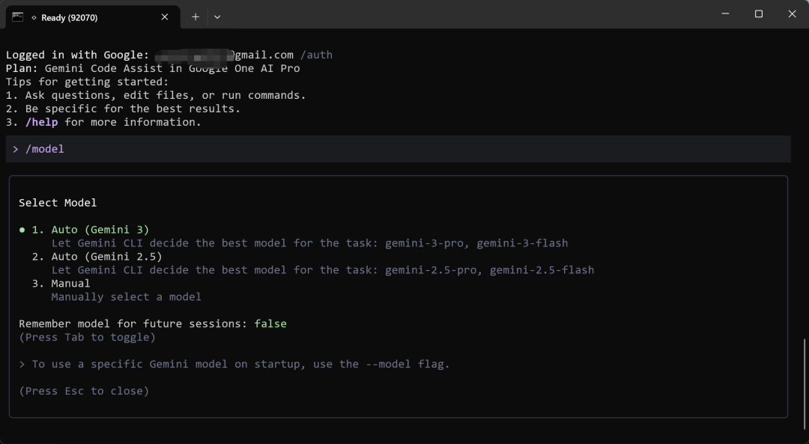
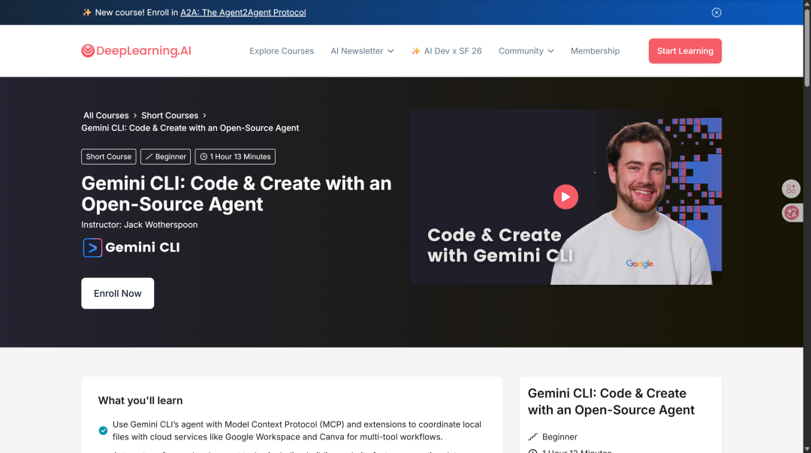

大家好，我是鲁工。
前段时间刷推特的时候看到Google的Developer Advocate Jack Wotherspoon发了条消息，说他跟DeepLearning.AI合作搞了一门Gemini CLI的免费课程。
一看有吴恩达的背书，这个课程我必须看一手。

其实我关注Gemini CLI还算是比较早的了，去年七月份就在公众号写过Gemini CLI的入门教程。这次看到Google在终端AI编程这块也开始搞教育了，还是挺好奇的。今天就来聊聊Gemini CLI这个工具和这门课到底怎么样。
Gemini CLI，命令行效率神器！也是目前唯一能白嫖Gemini 2.5 Pro的方式了
Gemini CLI
从深度学习时代过来的朋友应该对DeepLearning.AI不陌生，吴恩达（我在深度学习时代就颇受吴恩达老师的课程恩惠）的平台，上面有大量免费的AI短课。这次Google跟它合作推了这门课，主角就是Gemini CLI。
简单来说，Gemini CLI是Google出的一个开源终端AI Agent。跟大家日常用的Claude Code类似，它能直接在命令行里调用Gemini模型的能力，帮你写代码、改Bug、管理文件、执行Shell命令。
一行命令安装最新版：
npm install -g @google/gemini-cli@latest需要Node.js 20以上的版本。装完之后用个人Google账号登录就能直接用，不需要其他付费订阅操作。

聊几个关键数据。
模型方面，Gemini CLI默认用的是Gemini 3.0 Pro，上下文窗口100万token。100万token大概能装下一个中大型项目的全部代码，跟Claude Code目前的上下文能力在同一个量级。

免费额度是Gemini CLI最能打的地方：每分钟60次请求，每天1000次。对比一下Gemini标准API的免费版，每分钟只有2次、每天20次。说白了就是给CLI用户开了个超级VIP通道，这个诚意在同类工具里属于独一档的。
开源方面，Gemini CLI采用Apache 2.0协议完全开源，代码都在GitHub上：
https://github.com/google-gemini/gemini-cli
技术实现上，Gemini CLI用的是ReAct循环（推理加行动的交替执行），配合内置工具和MCP服务器来完成复杂任务。
另外Gemini CLI还有个自动路由机制。简单任务会自动分配给Gemini Flash（更快），复杂任务才调用Gemini Pro（更强）。这个设计挺聪明的，能在速度和质量之间自动做平衡。
国内阿里的Qwen Code，其实就是基于Gemini CLI开源二次开发出来的。
这门课讲了些什么
课程全称是Gemini CLI: Code & Create with an Open-Source Agent，讲师Jack Wotherspoon是Google的高级开发者倡导者（Senior Developer Advocate）。

总时长1小时13分钟，11节视频课，定位入门级，完全免费。
课程地址：
https://www.deeplearning.ai/short-courses/gemini-cli-code-and-create-with-an-open-source-agent/
配套代码仓库也已经开源在GitHub上：
https://github.com/https-deeplearning-ai/sc-gemini-cli-files
我把11节课的内容梳理一下。前3节讲基础，包括Gemini CLI是什么、功能导览、以及GEMINI.md上下文配置。中间3节进阶，覆盖MCP工作流、Extensions扩展自定义、软件开发实战。后面3节是拓展场景，分别是数据分析、内容创作和学习辅助。最后一节收个尾。
实战项目挺有意思，模拟的是为一个AI会议做全套开发。你要用Gemini CLI搭建会议网站的Session目录，用本地加云端数据源做数据仪表盘，还要从会议录音生成社交媒体内容。一个项目串起了软件开发、数据处理、内容生成三个场景，覆盖面比较广。
课程里面有个重点我想单独拿出来说，就是GEMINI.md。
用过Claude Code的朋友对CLAUDE.md应该不陌生。就是在项目根目录放一个Markdown文件，告诉AI这个项目的技术栈、编码规范、特殊要求。Gemini CLI的GEMINI.md作用完全一样，也是给AI提供项目级的上下文指令。
GEMINI.md有个设计我觉得比较巧妙：分层加载。全局配置放在~/.gemini/GEMINI.md，项目配置放在项目根目录，子目录还能再放更细粒度的。三层上下文会被自动合并，从通用到具体逐层叠加。另外它还支持用@file.md的语法导入其他文件，方便把大的配置拆成多个模块。
这个思路跟CLAUDE.md的设计逻辑基本一致。说白了，在终端AI Agent这个赛道上，各家工具在产品设计上已经趋同了。项目上下文文件、MCP支持、ReAct循环，这些已经变成了标配。
作为Claude Code用户聊几句
坦率地说，我目前主力用的终端AI编程工具是Claude Code，短期内也没有换的打算。但Gemini CLI这个东西确实值得关注。
原因很简单：免费额度实在太香了。
Claude Code的使用是绑定在Anthropic的订阅套餐里的，要么走API按token计费，要么买Max订阅。对于重度用户来说每个月的成本不低。而Gemini CLI用个人Google账号就能每天免费用1000次Gemini模型，这个性价比确实没什么好挑的。
对于刚入门AI编程的朋友，这门课加上Gemini CLI的免费额度，基本就是零成本上手终端AI Agent的完整工作流。以前想体验这套东西，要么掏钱买订阅，要么自己折腾API配置，门槛不算低。现在Google把工具免费给你、课程免费教你，这一套确实把入门成本打到了接近零。
之前我写过一篇关于斯坦福CS146S的文章（斯坦福CS146S，Vibe Coding第一课），那是一门10周的大学正式课程，教的是Vibe Coding的完整方法论和工作流。而DeepLearning.AI这门课1小时13分钟，聚焦在Gemini CLI这一个工具的实操上。一个偏方法论，一个偏动手，定位不同但刚好互补。
MCP这块也顺便说一下。课程专门用了一节讲MCP工作流，演示怎么通过MCP连接Google Workspace、Canva这些外部服务。MCP作为AI工具的通用连接协议，学会了在Gemini CLI里怎么用，同样的思路在Claude Code里也能用，这个知识是可以迁移的。
终端AI编程这个赛道，从2025年到现在已经从Claude Code一家独大变成了多方混战。Google有Gemini CLI，GitHub有Copilot CLI，OpenAI有Codex CLI，还有各种社区开源方案。竞争对用户来说是好事，工具越卷，免费额度越多，体验越好。
如果你还没用过终端AI编程工具，Gemini CLI加上这门免费课是一个相当不错的起点。如果你已经是Claude Code或者其他工具的用户，也建议抽空了解一下Gemini CLI的思路，多一个工具在手里总没坏处。
Google这波操作，把终端AI编程的入门成本打到了几乎为零。工具免费、课程也免费，光凭这一点，就值得让更多人知道。
多说一句，我其实挺希望谷歌能把Gemini CLI和Antigravity这几个AI编程工具改成订阅收费模式，这样才能真正投入更多资源使其成为真正的生产力工具。
感谢您阅读我的文章。我是鲁工，九年AI算法老兵，AI全栈开发者，深耕AI编程赛道。感兴趣的朋友也可以加我微信（louwill_）交个朋友。